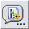

On the Controls palette, click Select a Control, or in the icons view, click the Select a Control  icon to add a control to the front panel that does not appear on the Controls palette. Select the appropriate .ctl file to add the control to the front panel.